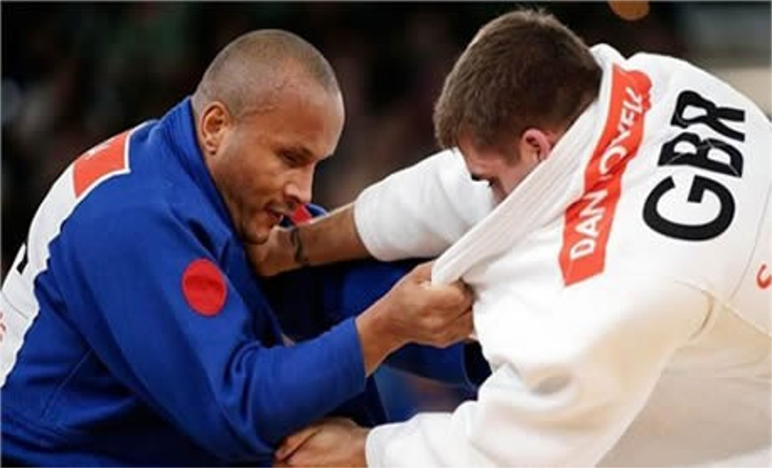

Atletismo

O atletismo faz parte do programa dos Jogos Paraolímpicos desde a primeira edição, em Roma-1960. Mas foi apenas em 1984 que o Brasil conquistou as primeiras medalhas na modalidade, em Nova Iorque (EUA) e em Stoke Mandeville (Inglaterra). Naquele ano, o país faturou seis medalhas de ouro, 12 de prata e três de bronze no atletismo. No total, o país já faturou 109 medalhas em Jogos Paraolímpicos, das quais 32 foram de ouro, 47 de prata e 30 de bronze
Judo
O Judô foi a primeira modalidade de origem asiática inserida no programa paralímpico. Este esporte é praticado por atletas com alguma deficiência visual e estreou em Jogos Paralímpicos na edição de Seul 1988, a penas com as disputas no masculino. As mulheres só entraram nos tatames a partir dos Jogos de Atenas, em 2004. No Brasil, a entidade que comanda a modalidade é a Confederação Brasileira de Desportos de Deficientes Visuais (CBDV) e, no âmbito mundial, o judô é administrado pela Federação Internacional de Esportes para Cegos (IBSA, na sigla em inglês), fundada em Paris, em 1981. As primeiras medalhas do judô paralímpico brasileiro vieram justamente na estreia da modalidade nos Jogos de Seul 1988. Cinco judocas representaram o Brasil na Coréia do Sul e voltaram de lá com três bronzes, conquistados por Jaime de Oliveira (60 kg), Júlio Silva (65 kg) e Leonel Cunha (+95 kg). O primeiro ouro veio em Atlanta 1996, com Antônio Tenório da Silva (86 kg). Nos Jogos seguintes, Tenório se tornaria o maior expoente do judô paralímpico nacional, conquistando as quatro medalhas de ouro que o país tem nessa modalidade em Paralimpíadas (Atlanta 1996, Sidney 2000, Atenas 2004 e Pequim 2008). No feminino, as primeiras medalhas brasileiras vieram também no ano em que a categoria foi integrada ao programa para límpico, em Atenas 2004. Karla Cardoso (48 kg) e Daniele Silva (57 kg) conquistaram uma prata e um bronze, respectivamente, n a Grécia. Na última edição de Jogos Olímpicos, em Londres 2012, o Brasil conquistou três bronzes, com Daniele Milan (63 kg), Michele Ferreira (52 kg) e Antônio Tenório (100 kg), além da prata de Lúcia da Silva (57 kg). No total, o judô possui 18 medalhas paralímpicas, sendo quatro ouros, cinco pratas e nove bronzes.
Futebol de Cinco

O Futebol para deficientes visuais, também conhecido como futsal e futebol para cinco, é uma adaptação do futebol para atletas com deficiências visuais, incluindo os cegos. O desporto, governado pela Federação Internacional dos Desportos para Cegos (IBSA), é jogado com regras da FIFA modificadas. O campo de jogo é menor e rodeado de placas. Cada equipe tem cinco jogadores, incluindo o guarda-redes. As equipes podem ainda ter um guia, que está posicionado fora do campo de jogo, para assistir os jogadores dirigindo-os. A bola está equipada com um dispositivo que faz barulho para os jogadores poderem localizá-la pelo som. Os jogos têm duas partes de 25 minutos cada, com um intervalo de 10 minutos. B1 - Atletas totais ou quase totalmente cegos; desde a não percepção da luz até à percepção da luz mas com a impossibilidade de reconhecer a forma de uma mão. B2 - Atletas com visão parcial; conseguem reconhecer a forma de uma mão com uma acuidade visual de 2/60 ou um campo visual de menos de 5 graus. B3 - Atletas com visão parcial; acuidade visual de 2/60 até 6/60 ou campos visuais de 5 a 20 graus. As equipes podem usar atletas com visão como Goleiros/ Guarda-Redes e Guias; os Goleiros/ Guarda-Redes com visão não podem ter estado registrados na FIFA por, no máximo, cinco anos. Existem dois tipos de competição. Para jogos da Classe B1, apenas atletas da classe B1 são permitidos, com exceção para os guarda-redes e para os guias, que podem ser das classes B2, B3 ou que vejam. Para jogos das Classes B2/B3, as equipas podem alinhar com jogadores das classes B2 e B3; pelo menos dois jogadores da classe B2 devem estar em campo ao mesmo tempo. O Futebol de cinco na Europa desenvolveu-se na Espanha. O primeiro campeonato nacional espanhol teve lugar em solo espanhol, em 1986. Na América do Sul, há registros de um Torneio brasileiro organizado em 1980. Os Campeonatos Americano e Europeu começaram em 1997, seguidos pelo primeiro Campeonato do Mundo, em 1998. O desporto foi adicionado aos Jogos Paralímpicos de Verão em 2009 O Brasil foi campeão dos Mundiais em 1998, 2000 e 2010,[1] e a Argentina venceu em 2002 e 2006. Nos Jogos Paralímpicos, o Brasil foi campeão em 2004, 2008, 2012 e 2016.